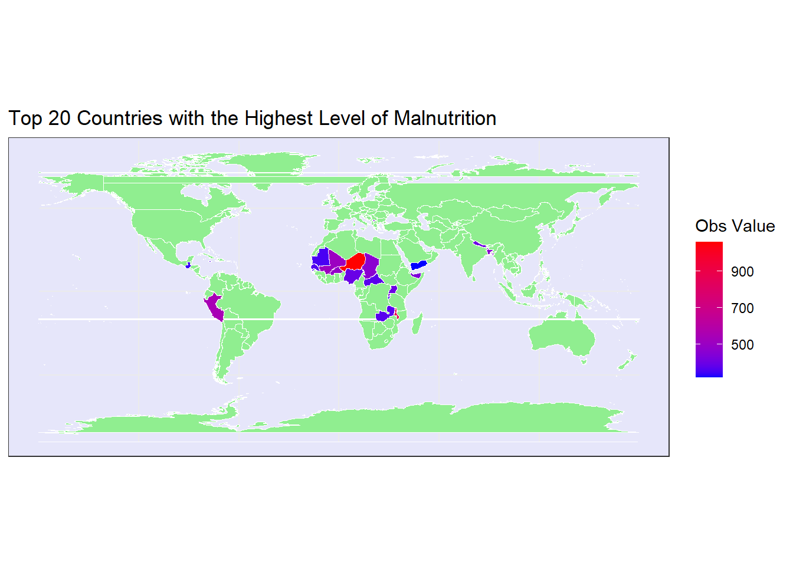

CLICK TO SEE THE CODE
# Load the required libraries
library(tidyverse)
library(sf)
library(rnaturalearth)
library(lwgeom)
library(dplyr)
# Import the unicef_indicator_2.csv file
data <- read_csv("unicef_indicator_2.csv")
# Clean and transform the data
clean_data <- data %>%
drop_na() %>%
filter(!is.na(obs_value) & obs_value >= 0)
# Filter for the top 20 countries with the highest obs_value
top_20 <- clean_data %>%
group_by(country) %>%
summarise(obs_value = sum(obs_value)) %>%
top_n(20, obs_value)
# Load World Map dataset and make the geometry valid
world_map <- rnaturalearth::ne_countries(scale = "medium", returnclass = "sf") %>%
st_make_valid()
# Create a lookup table to map country names to ISO A3 codes and join with top_20
top_20 <- top_20 %>%
left_join(world_map %>% select(iso_a3, name_long) %>% distinct(), by = c("country" = "name_long"))
# Merge world_map and top_20 data frames
merged_data <- left_join(world_map, top_20, by = "iso_a3")
# Plot 20 countries with the highest obs_value
world_map_chart <- ggplot() +
geom_sf(data = merged_data, aes(fill = obs_value), color = "white") +
scale_fill_continuous(low = "blue", high = "red", na.value = "lightgreen", name = "Obs Value") +
labs(title = "Top 20 Countries with the Highest Level of Malnutrition") +
theme_bw() +
theme(panel.background = element_rect(fill = "lavender"))
#View the Map
world_map_chart